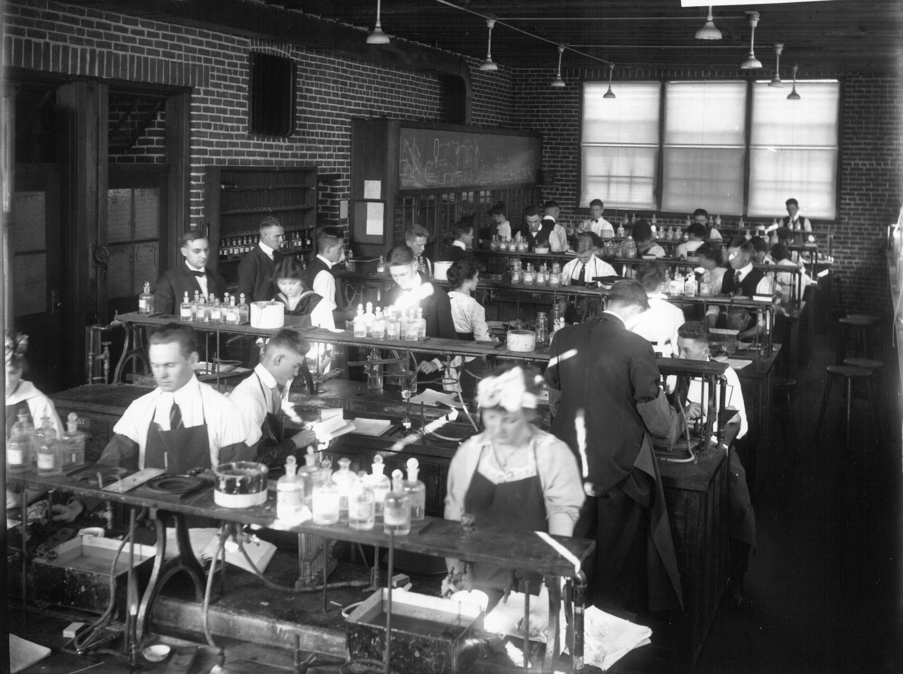

Start Where you sit
a story about Digital Transformation
gavin@arapaima.uk
Start where you stand and never mind the past,Start where you stand; Berton Braley
The past won't help you in beginning new,
If you have left it all behind at last
Why, that's enough, you're done with it, you're through;
Summon the Enterprise DevOps Consultants
Conway's Law
organizations which design systems ... are constrained to produce designs which are copies of the communication structures of these organizations.M. Conway, How Co Committees Invent?
Start from where you sit?


Reducing the blast radius
The three ways
- Create fast flow of work
- Shorten and amplify feedback loops
- Create a culture of Experimentation and Learning
Gene Kim et al, The Phoenix Project, Ch 7
Flow
Feedback
Culture of Experimentation

The purpose of accruing political capital is to be able to spend it on doing the right thing
Anon, the internet

The world won't care about your old defeatsStart where you stand; Berton Braley
If you can start anew and win success.
The future is your time and time is fleet
And there is much of work and strain and stress.